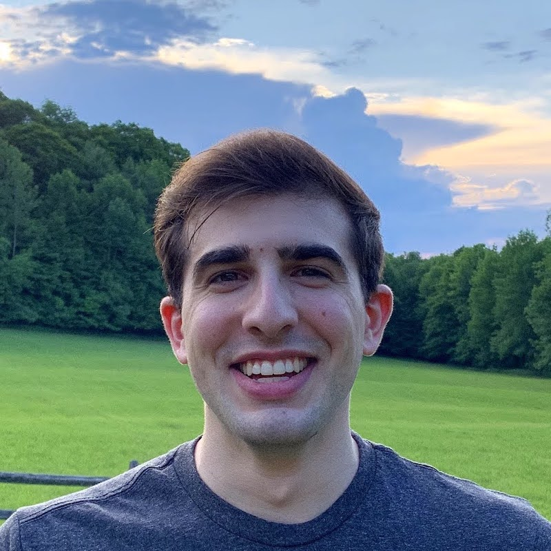

seL4 celebrated three key anniversaries in 2024. To celebrate these key anniversaries, a special panel will gather at the seL4 Summit 2024 to reflect on the journey over the past 20 years and discuss the future ahead.
seL4 celebrated three key anniversaries in 2024. To celebrate these key anniversaries, a special panel will gather at the seL4 Summit 2024 to reflect on the journey over the past 20 years and discuss the future ahead.
seL4 celebrated three key anniversaries in 2024. To celebrate these key anniversaries, a special panel will gather at the seL4 Summit 2024 to reflect on the journey over the past 20 years and discuss the future ahead.
The panel will cover the journey from the early days (2004-2009) to the developments over the years (2009-present), and then look to the future, with key players outlining their visions for seL4 in the next 20 years. The panel will be a mix of in-person anecdotes, videos, and quotes, including participants from Collins Aerospace, DARPA, Dornerworks, Kry10, Proofcraft, The University of Melbourne and UNSW.
 The panel will be moderated by Nick Spinale from Colias Group, LLC.